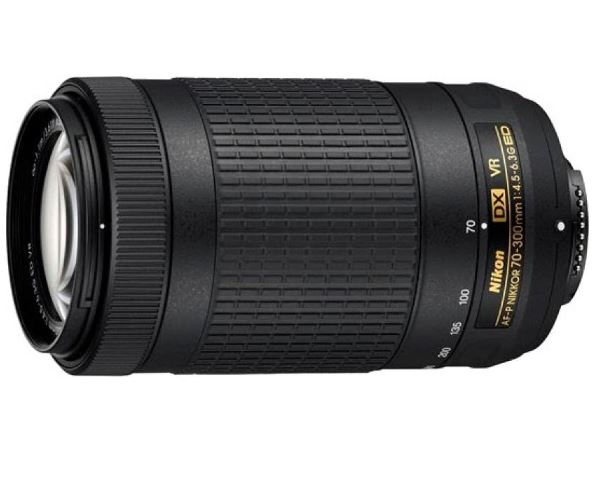

| Lens |
Name |
Price |
Type |
Maximum Focal Length |
Minimum Focal Length |
Aperture with Max Focal Length |
Aperture with Min Focal Length |
Image Stabilisation |
|  |
Nikon AF-P DX NIKKOR 70 - 300 mm f/4.5 - 6.3G ED VR Lens |
₹12,299 |
Telephoto |
300 mm |
70 mm |
f/4.5 - 6.3 |
f/22 - 32 |
Yes |
 |
Nikon AF-S NIKKOR 50mm f/1.8G Lens |
₹9,999 |
Standard |
50 mm |
50 mm |
f/1.8 |
f/16 |
No |
 |
Canon EF 50 mm f/1.8 STM Lens |
₹8,995 |
Standard |
50 mm |
50 mm |
f/1.8 |
f/16 |
No |
 |
Canon EF-S 55 - 250 mm f/4-5.6 IS II Lens |
₹12,199 |
Telephoto |
250 mm |
55 mm |
f/4 - 5.6 |
f/22 - 32 |
Yes |
 |
Nikon AF-S DX NIKKOR 55-200MM F/4-5.6G ED VR II Lens |
₹15,650 |
Telephoto |
200 mm |
70 mm |
f/4.5 - 6.3 |
f/22 - 32 |
Yes |
 |
Sigma 70 - 300 mm F4-5.6 DG Macro for Canon Digital SLR Lens |
₹8,499 |
Telephoto |
300 mm |
70 mm |
f/4 - 5.6 |
f/22 - 32 |
Yes |
 |
Tamron AF 70 - 300 mm F/4-5.6 Di LD Macro for Canon Digital SLR Lens |
₹8,999 |
Macro |
300 mm |
70 mm |
f/4 - 5.6 |
f/22 - 32 |
Yes |
 |
Canon EF 24 - 70 mm f/4L IS USM Lens |
₹81,475 |
Standard |
70 mm |
24 mm |
f/4 |
f/22 |
Yes |